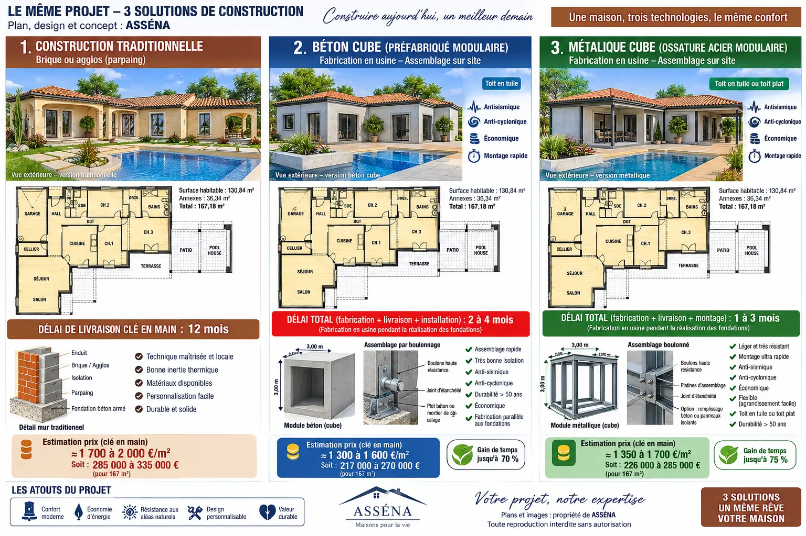

Fondations
Dalle, radier, longrines ou solution adaptée à l’étude géotechnique. Les appuis et réservations sont préparés pour recevoir la structure.
ASENA MODUL SYSTEM
La structure, l’enveloppe, les réseaux, le transport et la pose sont coordonnés dès la conception. Le système reste adaptable au plan et aux contraintes du terrain.
Le principe
ASENAMODUL repose sur une combinaison étudiée de modules volumétriques et d’éléments 2D en béton préfabriqué. Les modules 3D conviennent aux volumes compacts et aux noyaux techniques. Les panneaux 2D libèrent les grandes pièces et facilitent l’adaptation architecturale.
Le découpage est décidé selon le plan, les portées, le poids, les dimensions transportables, l’accès au terrain et la capacité de la grue.
Deuxième système constructif
Ossature acier, modules prééquipés en atelier, transport, levage et assemblage rapide sur des fondations préparées.

Composition
Chaque couche possède une fonction précise et doit rester cohérente avec les autres.
Dalle, radier, longrines ou solution adaptée à l’étude géotechnique. Les appuis et réservations sont préparés pour recevoir la structure.
Murs, voiles, planchers ou volumes préfabriqués dimensionnés par le bureau d’études, avec inserts et assemblages définis.
Calage, fixation, continuité structurelle, étanchéité à l’eau et à l’air, traitement acoustique et protection des interfaces.
Solution continue par l’extérieur ou composition adaptée, avec traitement des ponts thermiques et objectifs issus de l’étude énergétique.
Gaines, évacuations, plomberie et électricité coordonnés avant fabrication. Les zones techniques restent accessibles à la maintenance.
Enduit, bardage ou parement ; toit plat ou charpente avec tuiles. L’aspect final s’adapte au permis et au contexte architectural.
Technologies ASENA
Cette nomenclature provient des dossiers ASENA MODULAR et M130 conservés dans vos archives.
Pour chambres, petites pièces et volumes répétitifs lorsque le transport le permet.
Pour les séjours, garages, grandes baies et espaces nécessitant davantage de portée.
Mur porteur ou façade complétant les cadres et permettant une géométrie plus libre.
Éléments horizontaux pour planchers, terrasses et couvertures selon le calcul structurel.
Salle d’eau ou noyau humide préparé et testé en atelier avant raccordement.
Points accessibles et repérés pour l’électricité, l’eau, les évacuations, la ventilation et les données.
Charpente légère ou cassette préassemblée, compatible avec tuiles ou toit plat selon le projet.
Enduit, bardage, parement et modénatures donnant à chaque maison son identité finale.
Démonstrateur issu des archives
Le dossier industriel prévoit une maison familiale d’environ 130 m² avec trois chambres, garage, séjour, cuisine, deux espaces d’eau, noyau technique et terrasses. Il organise les composants M01 à M11 et les éléments de toiture R01 à R06.
Le prototype M130-001 doit servir à mesurer les poids réels, les temps de fabrication, le nombre de camions, les levages, les tolérances et les reprises avant toute promesse commerciale ferme.

Fabrication et chantier
Pendant que les composants sont produits et contrôlés, le terrain, les fondations et les réseaux sont préparés.
Trois niveaux de livraison
Chaque formule est précisée dans la notice descriptive. Les limites de prestations, fournitures, raccordements et travaux réservés au client sont indiquées avant engagement.
Structure
Pour un client qui souhaite organiser lui-même le second œuvre ou travailler avec ses propres entreprises.
Intermédiaire
Pour conserver une part de travaux personnels tout en recevant une maison protégée et techniquement préparée.
Accompagnement complet
Pour confier la coordination des postes prévus jusqu’à la réception de la maison.
Points à valider
Le système présenté est un concept constructif ASENAMODUL en développement. Il ne constitue pas à lui seul une validation technique, une certification, un prix ferme ou un délai garanti.
Étude personnalisée
Envoyez la commune, le plan de parcelle, vos surfaces et le niveau de livraison souhaité.